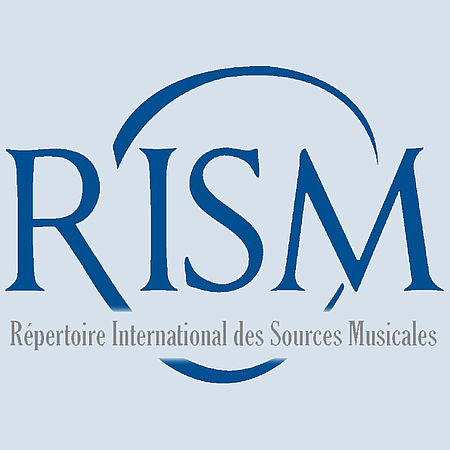
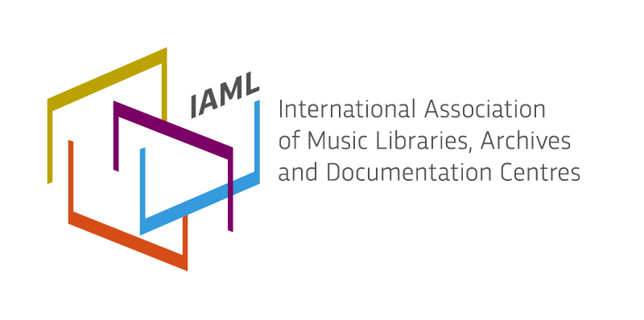

В настоящее время фонды Научно-музыкальной библиотеки насчитывают около 1,5 миллионов экземпляров. Наиболее полно представлены произведения русских и советских композиторов и литература об отечественной музыке. Значительное место в фондах библиотеки отведено зарубежной музыке. Типология изданий, представленных в библиотеке, разнообразна: ноты, книги по музыке, периодические издания, словари, энциклопедии, СИФ (газетные вырезки, буклеты музыкальных конкурсов и фестивалей, концертные программы), неопубликованные материалы (дипломные работы, диссертации). Большой интерес представляет также собрание (около 20.000 экземпляров) редких изданий и рукописей древнерусской и западноевропейской музыки, именные коллекции, автографы.
Электронный каталог содержит библиографические записи на все виды документов, включая статьи, изданные на русском языке, на различных носителях и в различные хронологические периоды.
Нотные издания отражены в электронном каталоге частично. Полный перечень нотных изданий можно найти в имидж-каталоге.
В электронном каталоге отражены полностью:
публикации, входящие в Электронную библиотеку НМБТ;
поступления книг и нот с 1994 года;
книги по музыке на русском и иностранных языках;
диссертации и авторефераты диссертаций.
Ведётся постоянная работа по отражению в электронном каталоге документов за предыдущие годы.
Доступ к электронному каталогу:
с компьютеров в отделах библиотеки;
с любого компьютера через интернет (с возможностью электронного заказа).
Электронная библиотека включает в себя полнотекстовые источники - учебники и учебные пособия, используемые в учебном курсе, а также ноты. Этими ресурсами могут пользоваться читатели, зарегистрированные электронной библиотечной системе. Доступ предоставляется бесплатно. Для просмотра источника нужно нажать на строчку "pdf", после чего начнется загрузка.
За предоставлением доступа к электронной библиотеке необходимо обратиться на абонемент или читальный зал.
Электронный Имидж-каталог представляет собой отсканированные карточки традиционного алфавитного библиотечного каталога. Имидж-каталог содержит библиографическую информацию об изданиях и является составной частью Электронного каталога библиотеки.
В Имидж-каталоге возможен поиск по разделителям, а также алфавитный поиск по каталожным ящикам.
Библиографический Указатель «Музыка» создавался НМБТ, являющейся информационным центром России в области академической музыки, совместно с Научным Издательским Центром «Информкультура» РГБ. Указатель выходит в свет с 1974 года как периодическое издание на бумажном носителе, с 1995 года также и в электронном варианте (в виде Базы данных).
С 2014 года издание на бумажном носителе прекращено, НМБТ и НИЦ «Информкультура» стали работать автономно, помещая созданную библиографическую информацию на своих сайтах, причем НИЦ «Информкультура» (infoculture.rsl.ru) обрабатывал региональные издания, некоторые зарубежные издания, публикации по широким вопросам музыкального искусства, в том числе, неакадемического, из фондов РГБ. В 2015 году в связи с реорганизацией РГБ НИЦ «Информкультура» прекратил свое участие в этом библиографическом проекте.
В настоящее время в проекте БУ / БД «Музыка» работает только НМБТ, она обрабатывает музыкальные журналы (прежде всего, научные), сборники, издания Московской консерватории по истории и теории музыки, учебные материалы для музыкальных учебных заведений из фондов НМБТ.
Библиографический Указатель «Музыка» и его электронная версия не имеет аналогов в нашей стране (прежде всего, по глубине хронологического охвата изданий). Если информацию о музыкальных изданиях в целом можно найти в каталогах на сайтах крупнейших библиотек, в том числе национальных, то сведения о содержании сборников и периодических изданий, аннотированные библиографические описания статей из них можно найти только в Библиографическом указателе / Базе данных «Музыка».
Всех тех, кто нуждается в уточнении деталей работы с электронной версией БУ «Музыка», мы приглашаем в Информационно-библиографический отдел НМБТ (комн. 411, 4-й корпус, тел. 8(495)629-78-00) для консультаций и обучения.
в н е ш н и е р е с у р с ы
 Электронно-библиотечная система издательства "Лань" предоставляет online доступ к полным текстам книг и журналов по различным областям знаний. Работать с системой можно с любого компьютера из любой точки мира, предварительно зарегистрировав личный кабинет с компьютера библиотеки
Электронно-библиотечная система издательства "Лань" предоставляет online доступ к полным текстам книг и журналов по различным областям знаний. Работать с системой можно с любого компьютера из любой точки мира, предварительно зарегистрировав личный кабинет с компьютера библиотеки
Доступны следующие возможности:
Личный кабинет пользователя (читателя):
* виртуальная книжная полка;
* заметки к книгам;
* закладки с комментариями;
* цитирование;
* конспектирование;
* удаленный доступ
* возможность регистрации и авторизации через социальные сети.
NEW! Для работы с документами в режиме оффлайн разработано мобильное приложение для операционных систем IOS и Android. В приложении доступны следующие функции:
* поиск по каталогу ЭБС;
* возможность создания книжной полки;
* поиск внутри книги;
* создание закладок в книге;
* синтезатор речи (с помощью которого незрячие и слабовидящие студенты могут использовать книги в учебном процессе)
 JSTOR (Journal STORage) — цифровая база данных полнотекстовых научных журналов (на различных европейских языках), а также книг (гуманитарные науки, только на английском языке). Научной музыкальной библиотеке имени С.И. Танеева предоставлен бесплатный доступ в систему jstor. Студенты и педагоги Московской консерватории могут воспользоваться jstor в читальных залах библиотеки
JSTOR (Journal STORage) — цифровая база данных полнотекстовых научных журналов (на различных европейских языках), а также книг (гуманитарные науки, только на английском языке). Научной музыкальной библиотеке имени С.И. Танеева предоставлен бесплатный доступ в систему jstor. Студенты и педагоги Московской консерватории могут воспользоваться jstor в читальных залах библиотеки
RILM Répertoire International de Littérature Musicale является некоммерческой организацией, которая предлагает цифровые коллекции и передовые инструменты для поиска исследований по всем темам, связанным с музыкой, и включает в себя информацию о музыковедческих работах всех стран и на всех языках, тем самым способствуя развитию исследовательской работы в данной области. База РИЛМ включает в себя более 700 000 библиографических записей на 214 языках.
Библиотека МГК участвует в проекте с 1967 года, ежегодно пополняет БД RILM библиографическими описаниями с рефератами на изданные в России публикации по истории и теории музыки (книги, статьи, диссертации). НМБТ имеет возможность пользоваться всем массивом информации RILM, имеет к нему электронный доступ. Всю информацию можно получить в Информационно-библиографическом отделе.
RIPM - Répertoire international de la presse musicale (Ретроспективный указатель музыкальных периодических изданий) предоставляет доступ к музыкальной периодической литературе, опубликованной в период с 1750 по 1966 год. База РИПМ включает в себя 196 музыкальных периодических изданий, 694 000 аннотированных библиографических записей, издано 292 тома библиографических указателей на бумажном носителе, в том числе около 20 томов на русском языке.
НМБТ – единственная российская библиотека, которая участвует в этом проекте (с 1992 года). НМБТ имеет возможность пользоваться всем массивом информации RIPM, имеет к нему электронный доступ. БД RIPM предоставляет и библиографическую информацию и полнотекстовый доступ к русским и зарубежным музыкальным журналам указанного периода с поиском по ключевым словам. Для студентов и педагогов Московской консерватории доступ бесплатный. Желающих воспользоваться данной услугой приглашаем в 411 комнату (4-й учебный корпус, Информационно-библиографический отдел).
 RISM - Répertoire International des Sources Musicales ─ Международный каталог музыкальных источников — крупнейший проект каталогизации музыкальных (преимущественно старинных) источников: рукописных и печатных нот и книг, хранящихся в библиотеках, архивах, монастырях, учебных заведениях и частных коллекциях. НМБТ участвует в проекте с 1975 года. Библиографические описания экземпляров дополнены нотным инципитом. С содержанием каталога Вы можете ознакомиться в электронной базе данных RISM https://rism.info.
Fontes Artis Musicae, международный журнал организации IAML (The International Association of Music Libraries, Archives and Documentation Centres). НМБТ ежегодно отправляла список музыковедческих монографий и сборников «Recent Publications in Music» в редакцию журнала. НМБТ – единственная российская библиотека, которая участвовала в этом проекте (с 1980-х годов). НМБТ имеет электронный доступ к спискам «Recent Publications in Music» стран-участниц проекта. С 2016 года журнал перестал печатать списки новых изданий стран членов IAML .
>